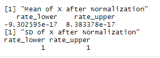
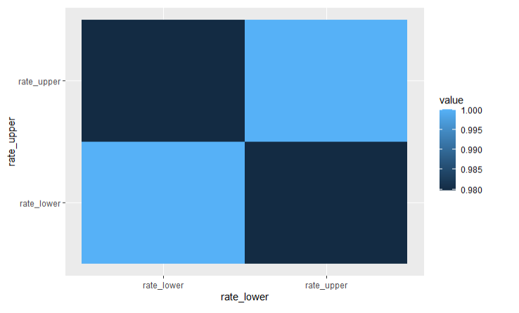
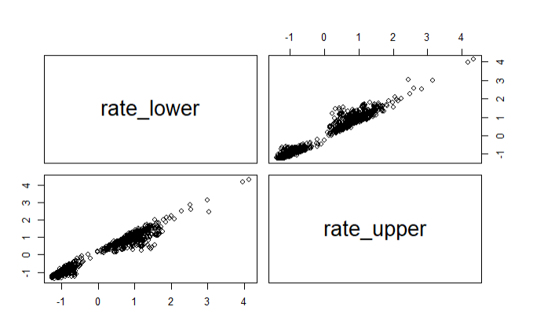

This the dataset I will use for the Naïve Bayes model
And this is the Code for reference
The dataset we are going to use for this section consists of 8 columns and 930 rows. We are going to choose column "rate_lower", column "rate_upper" and column "type", and apply Naïve Bayes classification to classify the type of the crime rate. "rate_lower" and "rate_upper" represents the boundary of crime rate and "type" represents whether the crime rate is due to alcohol or marijuana


Data normalization is the organization of data to appear similar across all records and fields. It increases the cohesion of entry types leading to cleansing, lead generation, segmentation, and higher quality data.
The matrix depicts the correlation between all the possible pairs of values in a table. It is a powerful tool to summarize a large dataset and to identify and visualize patterns in the given data
 Since the correlation heat map shows two variables are highly correlated, we can drop one of the variables and take one variable as our feature
By taking mean of the upper crime rate and lower crime rate as mean crime rate.

this is the distribution of mean crime rate. since it is not normally distributed, we cannot use Gaussian Naïve Bayes classification in this case
We split the dataset into two parts. One part is used for train the model and another part is used for testing the model performance
We are performing a train test split on our dataset. We are providing the test size as 0.20, that means our training sample contains 744 training set and test sample contains 186 test set
We use the Naïve Bayes and put the train test in
As we can see above, the accuracy of train data is 99.6% and we got 3 mislabeled crime rate out of a total 744 crime rate
For the test data, we only got 100% accuracy and there are no mislabeled crime rates

Explanation for the Result
We applied the Naïve Bayes classification on the crime rates and label them with two different labels. The model are perfectly predicting the label for each crime rates in train set and test set. The reason why the accuracy is so hight I guess it is because the Alcohol crime rates are much higher than Drug and the difference in their crime rate is very significant.